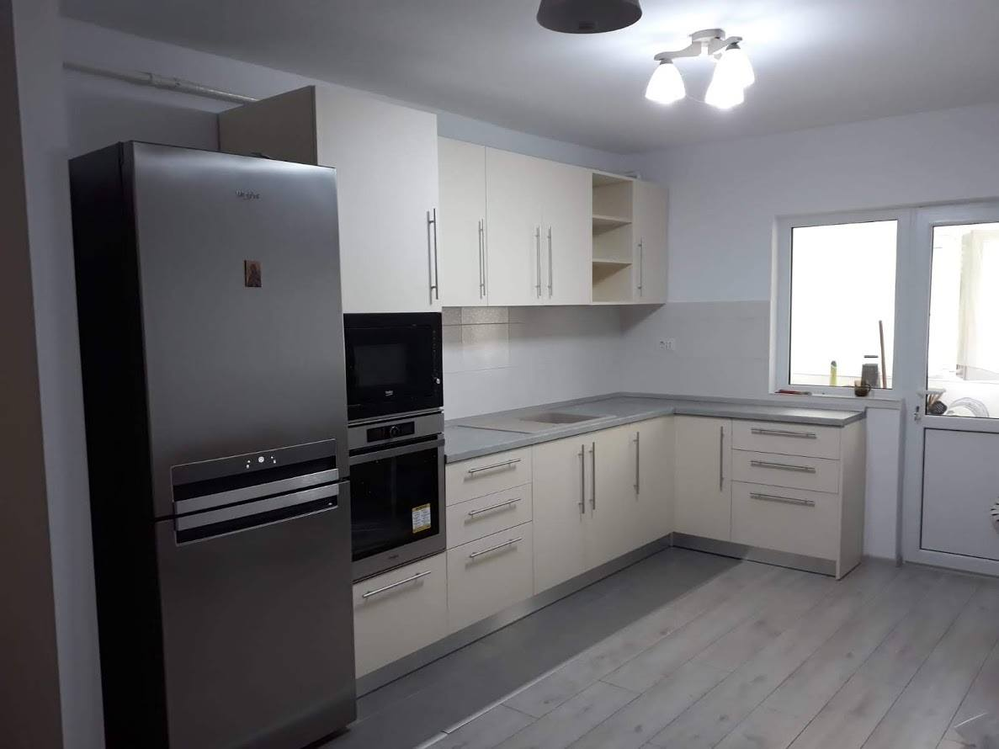
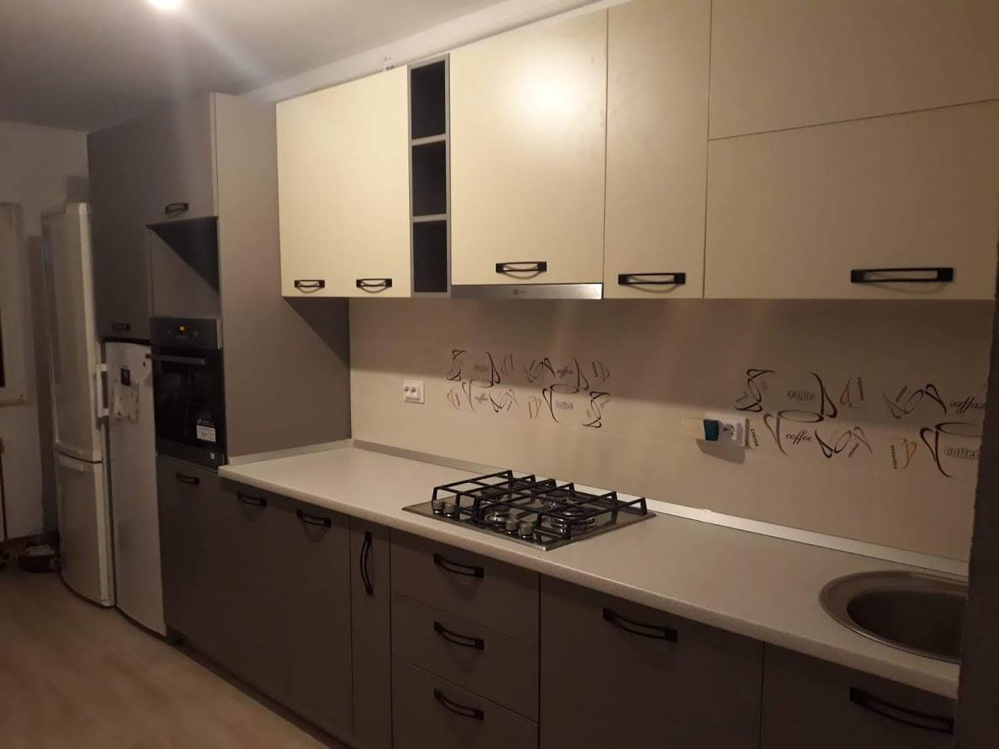

PAL · melamine
Project & Praktisch
Rechte fronten in neutrale tinten. Een praktische lijn wanneer de keuken functioneel moet zijn, ook als dezelfde uitvoering in meerdere woningen terugkomt.
Geschikt voor nieuwbouw en projecten, en voor seriematige montage.